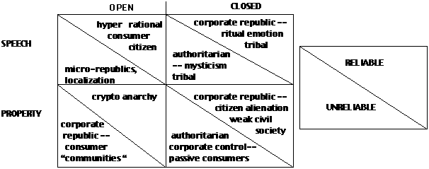
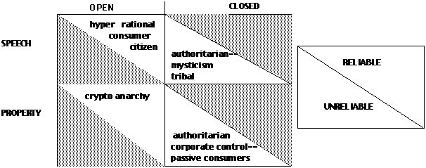
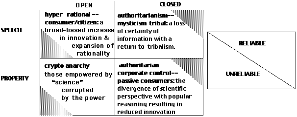

L. Jean Camp Jean_Camp@harvard.edu
Kennedy School of Government
L213
Harvard University
79
JFK St.
Cambridge MA, 02138
www.ljean.net
McLuhan (1962) argued that ways of thought are a function of the technologies used to communicate ideas. Together Eisenstein (1980) and Crosby (1997) would argue the ability to reproduce precise tables of numbers and diagrams enabled the scientific revolution. All three works focus on print.
Code will prove as significant as print. Code is a terse, simple, explicit description of action and interaction. Code describes the complex and quantitative in a more illustrative manner than static print. This would arguably encourage quantitative thought.
Conversely, faith in information resulting from the nature of print may be diluted by the experience of code. Printed materials are stable, reliable, and tend to improve in future additions. Web sites are dynamic, and thus unstable. Code requires regular upgrades and maintenance.
Building on computer science I consider code (as opposed to the Web, an instantiation of code) as a new technology of communication. Using the historical and sociological analyses of others, which have examined the results of print on perspectives and society, I offer four scenarios for the results of code. The four scenarios focus on the results of code on quantitative thought: the divergence of scientific perspective with popular reasoning resulting in reduced innovation; a broad-based popular explosion in innovation expanding the basis of reasoning; cypto-anarchy with those empowered by science corrupted with the power; and a loss of certainty of information with a return to tribalism. The last suggests a new era of ignorance, a moment in modern Dark Ages -- in that an excess of the light of information causes blindness as effectively as its absence.
I begin with a discussion of code and its primary types: embedded, source, binary and interpreted. I then consider three measures in which code is fundamentally different than print. In particular I speak of the trust inherent in connectivity, the organizational difficulties of information, and the problem of archiving information that may change rapidly. Following each of these explanations I offer my own hypotheses about how code and ubiquitous digital media might alter society and the sensibilities of its participants.
Then briefly describe my perception of the work of others on which I hope to build. In particular I focus on descriptions of aural cultures, cultures that exist before the introduction of alphabets. I also discuss some of the hypotheses about the nature of print and the resulting influences on the societies and perspectives of its users.
In each case I find that the outcome appears to be framed by the technology. While not an advocate of radical technological determinism I do move forward with an inherent assumption that the technology and society form each other in dance of a million steps. I then argue that social and legal norms currently under construction could lead to one outcome or another: a populace treating the technical as mystical or a populace deeply immersed in the control of their own lives.
Here I discuss the implications of regulatory regimes and network design for an Internet that concentrates control of speech: open code and open information vs. closed code and closed information. Open information and code encourages participation and examination just as open processes encourage participation and examination. Closed code and data discourage participation and examination. My core thesis is that code is speech, process and action. The regulation of code as speech, process and action will predispose certain responses to code, and thus to the medium which will increase frame our lives.
In order to best explain this argument I begin with an explanation of code.
2.1 What is Code
Code comes in several forms. There are a few basic points that are the core of the following discussion. First, source code communicates ideas by its nature, in the manner of mathematics of legal code. Second, binary code is not readable and is arguably more like a machine. Binary code can be disassembled or reverse engineered into source code but this is a difficult, tedious, and uncertain process.
Notice that I use the word open because of the economic connotations of free. The Free Software Foundation notes that the interest of the Foundation and free software in general is "free as in speech not free as in beer". But there is quite a bit that is free as in beer now on the Internet and thus this weaknesses of the language can cause essential confusion.
So code has few basic forms: source (or high level), interpreted, assembly, and executable or binary.
At the lowest level there is binary code, which machines read. Machine code is specific particular hardware and operating system. This is the type of code which users always receive when purchasing proprietary software. It cannot be read by humans.
The difficulty of reading binary code is reflect in the expense recently required in order to ensure that all code was Y2K compliant. Had source code been available a simple search and replace would have been adequate to examine the code. Not unlike the search and replace to which we are all accustomed from the use of word processors. Yet because the source code no longer remained tedious and expensive reverse engineering was necessary to update the code.
Here is an example of executable code to add two numbers:
0010 0000 0000 0100
0001 0000 0000 0101
0011 0000 0000 0110
0111 0000 0000 0001
0000 0000 0101 0011
1111 1111 1110 1001
0000 0000 0000 0000
High level code may be translated to an interim form, which is called assembly. Assembly is a low level language, in contrast to high level languages. Assembly is human-readable commands in the order in which they are implemented, for example move a previously stored number from one register to another so that the number can be loaded into the arithmetic logic unit to be added. Early on source code was written in machine or assembly language. Source code is tailed, and simple instructions, such as "a-b" </span>, would require multiple statements and explicit calls to register locations and other hardware adduces. An assembly program to add two numbers looks like this:
|
ORG 0 |
the program begins at location 0 |
|
LDA A |
first number is at location A |
|
ADD B |
add number from location B |
|
STA C |
store the result in location C |
|
HLT |
stop computer |
|
DEC 01 |
first number is 1 in base ten (e.g. decimal) |
|
DEC 02 |
first number is 2 in base ten (e.g. decimal) |
|
DEC 0 |
sum stored in location C |
|
END |
end of program |
See (Mano, 1982) for further explanation of these examples and the interaction of computer hardware and software in general.
So in this case the information can be read it is simply more difficult. Grace Hopper's invention of compilers freed humans from writing in assembly. Compilers enable the creation of high-level code. High level code can be compiled into source code. The following is the same as the above (adding two numbers) in source code:
#include <stdio.h
main()
{
int a,b;
a=1;
b=2;
printf("%i\n", a+b);
}
As an alternative to compiled code, high-level code may be interpreted into a lower level form and then executed on a virtual machine. Interpreted code is compiled every time it is run. LISP and Java are interpreted languages. These programs are in a sense compiled half-way. That is the programs are compiled to a form that is not very human readable but is made to run on an interpreter which interprets the code for a particular machine. However, interpreted languages are similar to compiled languages.
Scripting languages such as Perl and Javascript are also interpreted. However, scripting languages are interpreted every time they are run, as opposed to being interpreted once and run many times. This means that scripting languages inherently offer human readable source.
The notable thing about source code is that it can be read. It can be trivially altered. While code becomes more complex and requires specialization to read it (and I might add the same is true of Coleman's Foundations of Social Theory) this has the conditions of printed text.
Source code has the following properties:
readable
can be analyzed
can be altered
portable1
Object code has the following properties:
not human readable
cannot be easily analyzed
machine specific
Thus there are multiple forms of code. Code distributed in
different forms has different characteristics in terms of being
examined and altered by the users. I consider scripting languages as
a category of source available and high level interpreted languages
as object.
The design characteristics of the Internet which have consistently been argued to support democratic pluralism are content neutrality, ability to create as well as consume content, and synchronous information flow. These are all part of what is referred to as the 'end-to-end" argument. Basically the end-to-end argument refers to the ability to innovate. All two people need is compatible software on each of their machines; the network will connect them regardless of innovative or radical the software is (or how clunky and awful).
Broadcast and narrowcast are both fundamentally based in a view of the end-user as consumer of information. Narrowband and broadband both offer the end user to create as well as consume information.
Content neutrality refers to the ideal that information is transmitted through the network regardless of the contents of the packet. This means that owners of specific content could not, traditionally, preference their content over the contents of others. Think of bits as water and the information flow as water flow. There are a few ways to make sure that water is transmitted to a particular location. One, build very fat pipes and send as much as can possibly be desired. This so-called fat pipe strategy has been the Internet practice up to the late nineties. Two, put meters on the water and decrease demand. This is the strategy of the various quality of service proposals (e.g. Clark, 1996; Varian, 1995). The third alternative is to have a slow normal flow and allow privileged areas to build tanks. This is the Akamai approach.
The ability to speak as well as listen is critical to maintain the oft-heralded democratic implications of the Internet. The ability to be heard is being undermined in at least two ways. First, the creation of a bundle of property rights for content producers which prevents derivative works or criticism. ICANN and the expansion of trademark and copyright interests by the Congress (Samuelson, 1999) are effective legal mechanisms for silencing criticism. Particularly the Digital Millennium Copyright Act (DMCA) is undermining innovation by prohibiting individuals to reverse engineer software.
Second, the marketization of the control of information flow. The Internet creates an affordable mechanism for distributing content. Yet the network can be engineered so that the only method for widespread distribution requires contracts with the holders of selected caches and the only methods for discovery requires payment for selected search engines. Engineering the network in this manner would remove the advantage of cheap distribution.
Synchronous information flow is the assumption that people talk as much as they listen. Synchronous information flow means that my machine can send as much as it receives in a standard connection to the 'net. 56.6k means 56.6k either way, upload or download. Next generation broadband technologies are altering that assumption. Next generation broadband networks presume that home users are always clients and never servers. Next generation networks can be built so that independent ISPs have additional hurdles to reach clients and wireless users receive only information selected by the marketer of connectivity, so that content is determined by conduit.
The interconnection of networks requires open standards, open protocols, and open implementations of the code that implement these standards and protocols. The ability to interconnect requires the traditional ability to reverse engineer. The ability to innovate requires understanding the system in which you would innovate and being able to alter it.
Innovation on the Internet has been far slower than popular reports might suggest. The Internet was not invented in 1994, or even 1990. Rather the Internet was slowly built on increasingly available and useful services from the seventies. Reliability is associated with incremental as well as incredible innovations.
In a previous section I identified regulatory trends in the creation of property rights which would tend to create segregated, isolated networks with limited capacity for innovation, and the ability for centralized parties to select information.
In this section I will discuss a few somewhat more technical trends which would tend to create broadcast-style networks. In broadcast networks innovation at the endpoints is limited or discouraged, content can be selected or advantaged by network owners, and users are expected to be passive listeners.
The dominant high bandwidth to the home technologies are digital subscriber line, cable Ethernet and wireless.
Digital subscriber line technologies enable broadband speeds over telephone wires. DSL technologies provide an order of magnitude lower speed than cable technologies because the two telephone wires are a twisted pair of wires. Thus, while telephone technologies may continue to increase data-rates the co-axial cable has a fundamental physical advantage in terms of the interaction of the currents in the two wires, so that cable will always be ahead of twisted pair.
Conversely, DSL and other twisted pair technologies give each individual his or her own line. Thus the higher bandwidth provide over co-ax is shared by multiple households for the last mile. The lower overall bandwidth provided by DSL may be higher than the cable bandwidth to a particular home depending on the intensity of the neighbors use of Internet services.
Wireless comes in many forms, some of which is wireless to satellite and some of which provides a short point-to-point connection from the home to a nearby fiber. Wireless has the advantage of mobility, and it removes the need to rewire a home or office.
For a detailed discussion of access technologies see the May issue of info by Camden Publishing which has a series of articles written for the layperson on access technologies.
Phone lines are being moved to the next generation with asynchronous digital line technologies, known as xDSL. DSL is of interest for several reasons.
First, consider the arguments against open access -- arguments that say monopoly return best invite investment. Phone company rollouts of DSLs are closely correlated with rollouts of cable modems. Cable modems are closely associated with availability of direct broadcast satellite services. In fact, DSL equivalent technology was available from ISPs by using the clean copper provided for alarm circuits. When the purchase of alarm circuits for cheap data transmission was noted by the phone companies the response was to stop offering new alarm circuits.
DSL is not of interest to phone companies because it systematically undermines the profitable data business of T1 and T3 lines. Expensive guaranteed bandwidth for the small office and home office has been a cash cow to local exchange carriers.
The first point of interest is that competition increases roll-out. The second point is that DSL technologies are often asynchronous. DSL technologies expect the user to listen rather than speak. DSL services do not support home servers. However, DSL contracts do not uniformly prevent the user from setting up his or her own server. DSL offers open access. DSL is not bundled with content.
DSL technologies threaten the Internet assumption that all can speak equally, as well as listening.
Wireless systems may be built in a manner which enables and presumes fully synchronous information flows. Point to point microwave networks are an example of this type of architecture, as is cellular.
Wireless systems may be built with the assumption that the greater bandwidth is downstream. That is, with the assumption that the user is a listener. This is obviously most common with wireless systems that depend on satellite downlinks since low back channel bandwidth allows for lower power and cheaper home equipment.
Yet the most considerable threat to the end-to-end argument comes from that ubiquitous acronym: WAP. The Wireless Access Protocol is not HTML compliant. WAP interacts with WML (Wireless Markup Language) as opposed to HTML. WML of course addresses the low bandwidth and limited screen space issues with wireless. (Cover, 2000). However, WAP does more than that. The WML rewrites simple HTML so event he most basic tags (e.g. a link, a page break) no longer mean the same thing in WAP as in HTML.
All intelligence in WAP is built into the gateway, as opposed to the endpoint. Given the relative intelligence required in a machine to host a browser and that available in a Visor or Pilot, this is unnecessary. It is, in fact, more than unnecessary. It is a fundamental rewrite of the network protocols which ends the end-to-end argument. The distinction between the style of acknowledgments and encryption choices would seem rather obscure until one notes that these are all based on one fundamental design assumption -- that the WAP user connects to a pre-determined gateway and the gateway defines these services. The services provided at the gateway include content selection and portal provision.
Note concurrent with the development of WAP, IETF is developing protocols to enable transactions over wireless networks. However, the IETF assumes some processing capacity in the wireless receiver and there the ability to change providers. IETF is placing a premium on interoperability and flexibility. Note that the IETF proposals and the WAP proposals are not interoperable.
Imagine if you had to buy a new computer to change ISPs, or to select a new portal or home page. This is the choice offered the user by WAP.
The differences between Ethernet and cable Ethernet connection are primarily contractual and regulatory in nature. A core policy difference is the (lack of) open access requirements. However, it is also worth mentioning that many providers of cable Ethernet contractually prohibit users from setting up servers.
In terms of contractual requirements that users not set up servers this is interesting for three reasons. One, it forbids the user from using certain technologies which require that your machine serve others as well as being a client itself. Possibly prohibited are highly distributed computing applications, of which the SETI program is the best known. Similarly this prohibition in theory covers the use of Napster and its many clones and derivative (e.g. Gnutella).
Second this is of interest because it illustrates an asynchronous assumption. Recall that the ability to speak as well as to be heard are fundamental elements of the nineties Internet. The requirement that home Internet users do not have servers underlies all the business calculations that determine how much capacity is necessary and where.
Third, and most importantly, this means that the cable Ethernet provider does not support home servers. The expansion of this common shared bus high-, bandwidth network topology to the home should mean that all users could provide simple servers. That is everyone could be a publisher on the Internet on equal terms as in the days when Usenet dominated dialogue. Combined with a domain name system hostile to small users and free speech, this lack of technical support is particularly damning. Will it prove true that support for home servers is the analog of literacy for the printing press - so that those cultures which optimize for the exchange of ideas in this generation will dominate in the next?
Ethernet as implemented in cable networks is quite capable of supporting multiple providers and supporting servers. However, some of the networks are being built in a manner as to pre-empt open access. Open access is a traditional requirement of owners of conduit so that all may speak on equal terms. The new terms of connection are an example of propertization -- that those who own fast conduits own the data and eyeballs of those they connect.
Just as with DSL, the baseline assumption in the construction and contracts of cable Ethernet is that home users as to be entertained and not heard.
Caching is the 'store' part of the store and forward network. That is, as packets and information is routed temporary copies are made in various servers across the network. Each server chooses which bits to keep and which bits to dispose of. When a later request is made for a set of bits, for example for a Web page recently viewed, the server may choose to provide the local copy rather than sending the request across the network. (A cache is distinguished from a mirror because a mirror is a discrete site with a different name.)
There are several levels of this storage across the network. There are caches at the point where the local area network and the wide area network connect. There is a cache on each individual hard drive. There is a cache where the wide area network meets the Internet.
Caching choices have traditionally been driven by research on networks. Of course, some research suggest that the fact that the research is done on the networks of research institutions may be misleading, because researchers use the Internet varies somewhat from the average surfer's (Manley & Seltzer., 1997). Yet the practice of caching in the networks of the nineties has been to minimize transmission and optimize network performance.
The practice of optimizing network performance as driven by user desires for content has been altered with the entrance of Akamai into the market. Dave Clark is fond of saying, "The Internet routes packets and Akamai figures out how to route the money". Akamai provides caching a strategically chosen network points in order to provide higher quality network service for those who pay for space at the cache. Thus information provided by rich backers can be provided quickly, and made universally available, while speech from random individuals, non-profits, and NGO's other than corporations can be slowed.
Propertization is the expansion of property rights. Thus caching is not an expansion of property rights. There has never been regulation of caching, only the social norms that assume that caches are designed to optimize network performance. Thus while this change in the virtual landscape is not propertization it nonetheless alters the fundamental assumption of content-neutrality of routing on the Internet.
Open access refers to the requirement that owners of networks (conduit) must resell the conduit at reasonable rates to allow competition, particularly for value-added services. The current regulatory arguments suggest that companies will not invest in bringing high bandwidth service3s to the home. In this brief section I introduce the argument that the rollout of broadband services are a result of competitive forces and that the absence of open access regulation violates the fundamental tenet of telecommunications - -interconnection.
Consider for a moment the developments that have driven cable Ethernet and high-speed phone line (xDSL) services. The following discussion (a longer exposition of this perspective is available from McAdams, 2000) illustrates the economic forces which have driven the expansion of high-speed services to the home.
Initially there was stasis, with no line of business threatening another. Packet-switched enabled convergence as early as 1980 but there was no driving business need for companies to abandon their cash cows. However the creation of direct broadcast satellite threatened the income flow of the owners of the cable infrastructure.
Competition with direct broadcast satellite companies forced cable companies to upgrade services and networks. Cable companies with upgraded networks were able to offer high-speed network connections. This created direct competition with the small office and home office markets which were purchasing T1 and t3 frame relay services at an order of magnitude greater cost. Before this competition existed there was no reason for the phone companies - incumbent or new competitive entrants - to roll out a service that would have the primary result of gutting the companies' profit margins in the data market.
The clearest exposition of the reasons for interconnection can be found in the work of the Berkeley Round Table (Bar, Cohen, Cowhey, DeLong, Kleeman & Zysman, 1991).
Consider the core noun, as defined by the admittedly but interested 1913 Webster's Unabridged. Cast: To send or drive by force; to throw; to fling; to hurl; to impel; To direct or turn, as the eyes; To drop; to deposit; as, to cast a ballot; To throw down, as in wrestling.
Band: That which serves as the means of union or connection between persons; A fillet, strap, or any narrow ligament with which a thing is encircled, or fastened, or by which a number of things are tied, bound together, or confined; A company of persons united in any common design, especially a body of armed men; a bond.
So to band together or to cast as a group are both options of communication technologies which today combine to create the Internet.
Is code a machine or speech? Should code be patented like a machine or subject to copyright like text? Previous work has focused on the ethical implications of code (e.g. Kling, 1996; Johnson & Nissenbaum, 1995), a specific regulatory approach (e.g. Rice; DiBona Ockman & Stone, 1999), industry practices (e.g. Baldwin & Clark, 1999; Shapiro & Varian), or potential regulatory regimes for intellectual property as a whole in the digital (National Academy of Sciences, 2000).
The most clear proponent of code as speech can be found in the ruling of Bernstein v. US Dept. of Justice,11 and Karn v. US Dept. of State. In Bernstien v US DoJ and Karn v US DoS the Courts ruled that encryption technology was indeed speech. Conversely in the DeCSS case the judge has ruled that code which decrypts is not speech.
The two technologies, general encryption and music encryption , are governed by two very different sets of laws. Encryption is licensed by the Federal Government as a munitions under the International International Traffic in Arms Regulations (ITAR) and subsequent Export Administration Regulations (EAR). The ITAR regulates encryption as munition and argues that encryption code is technical data that should be exported only with Federal approval. "Technical data" is defined separately and in relation to defense articles22 in the ITAR.33 Technical data is generally information "which is required for the design development, production, manufacture, assembly, operation, repair, testing, maintenance or modification of defense articles."44 Thus for the purposes of national defense ITAR has been judged by multiple courts (although the Court dissents from these findings in Junger v. Daley) to be speech.
The second case is one where the defendant examined closed code and changed the marketing conditions. In this case, DVD players were linked to a hardware/software configuration. In order to view DVD movies using the operating system Linux the defendant had to reverse engineer the content scrambling system (CSS). This means that the defendant took binary code, observed the actions of the binary code, and deduced the actions which were necessary to mimic those actions so that the content scrambling system would be by-passed, thus allowing users of Linux to view DVD movies on the CD players. Thus the name, DeCSS.
In this case the judge found that the decryption code was not speech. In fact the judge found that the claims of reverse-engineering for competitive purposes was nothing more than a thin veil on the criminal action of theft of movies. Note that there were never claims that DeCSS was intended for piracy or that the author or distributors of the code were interested in profiting from the code in terms of illegal copying of intellectual property. In fact in the related case Universal City Studios v. 2600 Magazine on the practice of simply posting the code. Universal noted that there had not been a single case of piracy and argued that the existence of piracy was not the critical point - rather the potential of the existence was the issue. (EFF, 2000)
Notice these are two cases with extremely similar code: encryption code being the issue. This is not surprising considering of all purposes cryptographic code is the most explicitly concerned with the control of information In one case subverting corporate control was determined to be action (theft). In another case potentially subverting state control was judged speech.
Of course the distinctions between speech and action are not always clear even in the idealized world of verbiage. Sexual harassment is the most commonly (mis)used example; however threats or the planning of criminal activity are both seen as actions by the law. In addition, white collar crime consists often entirely of speech -- the exchange of insider information, discussion of prices, etc. Yet the distinction between product and speech is clear. In the case of professional services the distinction with mechanical products in terms of liability. Yet professional services can be products and action/speech simultaneously.
The theory of speech as act is most clear in the case of malicious code In this case by malicious code I mean code intended to do harm. A most recent case of malicious code as of the date of this paper is the "Love Bug". A virus was linked to an email. The virus wiped out a particular type of graphics files. For most users this was simply an annoyance. For Web developers it was extremely destructive.
Code may be speech and action simultaneously. The case of burning a draft card and the case of releasing code are examples of actions that may be predominantly symbolic. Codes is very different things and simultaneously subject to vastly differing legal perspectives. These cases are truly the tip of an iceberg, yet due to the fairly parallel nature of the cases and the opposition of the findings they may be exemplars.
Computer code is complex and nearly as complex is the legal code controlling its distribution. Currently the protection of the various levels of code is complex. Code can be subject to copyright, as with the GPL (Stallman, 1984). Code can be the subject of trade secrets, as with the claims that Microsoft is making against Slashdot. Code can be subject to patent. Each of these protections has strengths and weaknesses, but implicit in my discussion is the support for some form of traditional copyright as the optimal protection for code (Syme, 2000).
Code is the written word. Code is subject co copyright based on the level of liability applied (Samuleson,1990). In terms of liability code published is treated as publishers rather than producers of machinery and are thus subject to lower levels of liability.
Code is treated as service, which can be licensed. In particular the UCITA would allow the producers of software to share the same very low levels of liability with customer professional services. This would assume that mass-produced code was actually customer-produced software and make no distinction.
Code is subject to trade secret. Microsoft is using a combination of contract law and trade secret claims to prevent the publication of its implementation of Kerberos. Kerberos is an open standard; the most commonly used open standard to manage passwords. Usually when you receive a respond to the submission of a password, you have interacted with Kerberos.
To understand the importance of viewing code a note on Microsoft business practices are in order. Microsoft has a business practice called "embrace and extend" which is commonly referred to as "embrace, extend, and extinguish", by those who have been so embraced. Microsoft "embraces' a standard by implementing it and ensuring compatibility with Windows. Microsoft then "extends" the standard so it is not compatible with any but Microsoft products. Since Linux is making headway in the server market, making a cornerstone on network security inoperable with would leverage Microsoft's monopoly on the desktop to extend the hold to the server.
Kerberos would be an ideal standard to embrace, extend, and extinguish. The current Microsoft policy was to is to allow individuals to look at source code on the Web on the condition that the user views and accepts contract prohibiting discussion or any public exposure of the code. This could in practice prohibit open code proponents from making implementations interoperable with the new 'extended' Kerberos.
A reader of Slashdot.org, a community of open code developers and proponents, crafted a small program so that anyone using the program would need not agree with the license to view the code. In fact, anyone could click on the link provided and never see the license. Using this license by-pass, another reader of Slashdot posted the Kerberos code. Microsoft sued Slashdot on the basis that Slashdot was exposing a trade secret.
Code can be subject to patent. In particular algorithms can be subject of patents. Algorithms are widely seen as ideas in the scientific environment, even among those who own or are pursuing patents (O'Reilly, 2000). It is seen as a necessary practice required by bad law and worse business practice. Software patents have been the subject of much derision because the patent does not cover a particular implementation of the idea, that is a particular coding of an idea is not covered but rather the concept itself. This is a claim is in opposition to the written law of patents but is widely shared among scholars (e.g., League for Programming Freedom, 1992; Garfinkel 1994).
The old forms of property were defined as trade secrets, patents, and copyrights. Intellectual property law is almost as varied and confused as real property law, yet there are a few clear issues. The primary threads of intellectual property law are trademark, patent, copyright, and trade secrets.
Trademark law was originally established to allow businesses to distinguish themselves and prevent customer confusion (Johnson & Nissenbaum, 1995). Trademark law was applicable when one company presented itself in such a way as to be confused with another. Trademark law has not been actionable in cases where businesses with similar names were separated by lines of business or geography.
The rights of trademark holders are being radically expanded on the Internet with applications of trademark law not only to businesses but also union organizing drives (Historic Williamsburg), artistic endeavors (etoys) and political speech (gwbush).
Trademark holders are being given rights over speech critical of their commercial practices.
A trademark is a valuable piece of intellectual property. Before the domain name battles trademarks existed for the purpose of differentiating products. Now propertization has expanded the property rights of trademark holders by redefining the balance between trademark rights and speech rights.
The tendency for code to be action does not diminish its potential as speech. However, manufactured products and services for hire are not speech. Code can be a product as well as speech.
|
|
Open source/free licenses |
UCITA and proprietary licenses |
Copyright |
Patents |
Trade Secrets |
Open domain |
|
|
|
Depends -- is it a creative work? |
YES |
YES |
|
|
|
Code as professional service |
|
YES |
|
|
|
|
|
Code as embodied speech |
YES |
|
YES |
|
YES |
|
|
Ungoverned code |
|
|
|
|
|
YES |
Correspondence between models of software and forms of legal protection.
The previous table (copied from Syme, 2000) offers a view of the three rubrics under which code might be considered: speech, action/professional service or product.
If code is speech then it is subject to a critical marketplace and fair use, secondary uses, sampling, and open debate. If code is a product, and more importantly information is a product then the
By reliability here I mean acting in a manner that would be predicted by the user. Currently this means beeping when something contrary to the operating system is attempted and the ability to begin a process by clicking twice with a mouse.
Predcitability is a function of both secuirty and reliability. That is, if software can be argued by mailcious code then the bahvaior of that software will not be predictable. If software is badly engineered the software will not be predictable. If the software has very strigent requirements for user interface that does not account for the variability of human response then the software is unpredictable.
It is the conflict between tolerance for unpredictable human behavior and the requirement for security that together make predictability different for coded artifcats than for mechaniscal artifacts. Simple coded artifacts cannot respond as expected to human behavior.. Complex coded artifacts tend to have security weaknesses. Furthermore there is the issue of interface. With mechaniscal artifacts the issue of interface is fairly simple, for example, the interface to a lever is extrmely simple to understand. The more simple the mechanical machine the more simple the interface thus the more predictable the response.
Traditional machines may be made more complicated as more simple designs are tested. For example, the levels of heat in today's engines is far higher than the level of heat in the less efficient engines at the middle of the last century. Engines perform under more stringent conditions yet are also more reliable. Thus the engines of today are more robust as well as cleaner and more efficient. In older engines there was a greater margin of error and this greater margin of error allowed for reliability.
In the first case predicting all possible combinations of code on every machine is not possible. While each machine may come out of the both with predictable settings and software different users install different helpers, and are exposed to different electronic threats. All possible hardware and software combinations cannot be tested. The number of possible branches and path of a program grows at a combinatorial rate with the size of the code. Software engineering is an advancing but still young research area. Self-proving and self-testing code exist only in the lab. There is no requirement that all the potential environments of an automobile be predicted, only that the interface with the automobile to be suitable for the
Allowing users to make errors yet trying to respond in a predictable manner requires being forgiving of users. However, some users are malevolent. Some users will enter memory addresses when a password is requested, for example, and use the buffer overrun to subvert a machine.
Thus making a complex design reliable is difficult. Making a complex and reliable design secure is yet another order of difficulty.
Networking and communication are the core of the new economy. Yet this very networking requires trust. Connecting to a remote machine requires trusting that machine with information, at least about identity and often operating system. Distributed computing requires trusting the code on the machine for the owner of donated cycles, and trusting the owner of donated cycles with the code for the organizer.
A single automobile owner is not affected if another tries an innovation on the design of his or her machine. A single machine on a network can alter the network as a whole, especially if that network functions as a router or server as well as a simple host.
Information is delivered across the network by routing. The Internet Protocol defines only this routing. Routing is an exercise in trust. Reliable routing is possible only because of widespread cooperation and trust.
Unreliable routing can result from hardware failures at the local machine, malicious attacks on the network, or a failure in the local network. These are not distinguishable by the non-technical user. The user simply experiences reliability or a lack of reliability. If the computer locks up froma virus or a software error the effect is the same for the user: an unpredictable machine.
The widely reported denial of service attacks in recent months have not been the result of genius hackers. Rather the success of these attacks has been from the exploitation of trust a server extends a client who is attempting to connect. (For a layperson's description of routing and denial of service attacks, see Camp 2000.)
There is also an issue of events which are inherently more simple in the physical world. Consider a hand-off. A material good is handed from one person to another. Let us consider the good a book. The book will be transferred or it will not. If the book is damaged in sending the hand-off it will be obvious to the recipient. The same simple facts of life do not hold for electronic transfers. The information may be altered in subtle but undetectable ways. (Imagine the word "not" were to be moved in the text some number of times.) The book may be transferred only partially. The book may be damaged in a manner not detectable by those in the exchange. A third party may take a copy of the book in transit. A receipt from another transaction may convince the sender that the book has been received when it was in fact lost. Two books may be garbled with the recipient receiving half of each. None of these problems exist when one person simply hands another a text as the two stand together. Elements of reliability which are inherent or trivial off-line are difficult on-line. (Of course the converse is true. It is quite difficult to make a back-up copy of a book.)
In short code creates artifacts which can define our world as well as existing as speech. With these machines there is a more subtle and complex trade-off between elements of reliability than with industrial revolution devices as seen by the user: complexity, security, ease of use, and ability to recover. The range of relevant environments in which the device is expected to function is far greater in electronic environments than was the case in physical environments.
5.0 Conclusion
The innate nature of the Internet is neither. The Internet is often heralded as the ideal communications technology for human freedom because of this mythical innate nature. Of course the Internet has no nature. It is entirely constructed. It is constructed on protocols, hardware components, codes, standards, and networks which today have fundamental characteristics that appear, in practice, to be supportive of democratic pluralism: content neutrality, consumer voice, and synchronous information flow. All three of these result from the design and implementation of the underlying system. This design and implementation result not only from stated design goals (e.g., survivability) but also from, certain social assumptions (e.g., equality of users). Code has an innate nature but the interaction of code and community will determine if this nature is benign or malevolent. The fundamental characteristics of the Internet are changing, and are in fact likely to change more given the direction of evolution of the code; the wires on which the code runs, the standards which define the interconnectionof the wiress; and the regulations which define all of these.
Policy is very much like engineering in that at its best what is built is an infrastructure that enables individuals and societies to pursue their goals with efficient graces. They are also alike in that both policy and engineering are invisible when successful and gracefully designed, and dramatically visible during failure.
The first line of the table below comes from McLuhan (1962) whoo describes a tribal society, one where the predominant communication is aural. The second lineof the table is taken Eisenstien (1979). Eisenstien describes a transition from the copied word to one that is based on print, from a world of one to one to a world of one to many. The essence of print is one to many, with the creation of editions expected to be ever-improving, a support of a reductionist viewpoint, abstractions, and an ability to convery mathemtaical data. Techno-utopians (e.g. Negroponte ,1986; Pool, 1984)and technophobes (e.g. Beniger, 1989) argue as to the result of the Internet on society. Thus the third colume is taken from Catells and Wade. Castells (1997) has a theoretical focus on two movements the negation of space and the negation of time. Wade (1998) argues that the Internet is inherently interactive, built for communication rather than propaganda. Wade makes this argument on the basis of the nature of the Internet.
|
Transmission |
Control Points |
Optimal Use |
Distribution
|
|
|
Spoken Word |
1:1 or 1:few |
Community |
Emotion & imagery |
meters |
|
Written Word |
1:1 or 1:few |
Original copies |
Transactional record-keeping |
towns |
|
Printed Word |
1:many |
Press |
Diagrams, numeric tables |
cities or small nations |
|
Coded Word |
Many:many or 1:many |
Code production, gateways, or routers |
Action, complex interactions |
global |
I have a different view. I believe these to be the fundamental characteristics of code: global distribution, complex interactions, many to many potential, and no single point of control. Yet because code is able to implement complex interactions on a global scale does not imply with certainty that no control will exist that allows one perspective to shape what many experience. Having discussed the ways in which the network may be shaped, I conclude with the following matrix of possible interactions.
I select three dominant variables: predictability, transparency/interoperability, and property. In the interest of brevity I refer to these variables as reliable vs. unreliable,
Reliability addresses the property of code as action or machine. Machines can be reliable or systemically unreliable; closed v open and speech v. property.
Property asks if code has public value, such as a public good or if all value in code is privatized. Strong ownership would have isolated networks and software sold as a good or one-time service other than regulated as speech. Ownership is a correlated variable between the nature of the network (rights of conduit, broadcast vs. broadband) and the social and legal definitions of code. Ownership is also correlated with the definitionsof code as speech or property. Truly t he problem of discussing the web is itself an interconnected web and I am guilty of reductionism in this examination, yet I believe this to be a fruitful reduction because all these variables exist in a continuim in an inter-related space. Yet the boundaries of these spaces are useful to examine.

Yet I do not believe that all of these are sustainable. Unreliable software subject to examination in a society with any active participation will not be sustainable. The success of the open source movement at the lower level (servers, operating systems) and some applications (GIMP, chat clients) offers the promise that open unreliability will be an oxymoron in the long term (despite current failures in some applications e.g., GUI pop clients, browsers).
Similarly I do not believe that long term reliability is possible without examination and widespread incremental improvement. This argument is particularly strong if one considers that to be reliable, a product must be reasonably secure. Software engineering and security are closely related -- and systemically underprovided by the market. A most common and inadequate market approach to security is security by obscurity -- meaning leaving a weakness and hoping no one notices.
After deleting the intersections of open and unreliable as well as closed and reliable the following remains:

The hyper rational human is one who understands and embraces reductionism tools but only when appropriate. A hyper-rational human is one who recognizes the limits of rationality is terms of strict reductionism sense. A future with a hyper-rational humanity and a future with a primitive humanity are both alternatives. Is the universe as described by string theory "an unshakable pillar of coherence forever assuring us that the universe is a comprehensible place" (Greene, 1999) or is the Heisenberg principle of uncertainty to be the dominating metaphor for the next century?
Imagine a building where the builder could own all papers taken into the building. Where extracting the papers from the building became extremely expensive, requiring a specialist with specific tools. Even detecting the surveillance equipment and learning what information about you has been compiled and resold would require special tools. Now imagine that law prohibits those tools. Who owns your ideas and who owns your business? Now imagine that this building is your home. Who owns your identity? How much autonomy do you have? This world offers at best a return to the tribal, at worst the global authoritarianism as described in (Froomkin, 1999).
Essentially my argument is thus: to build a society which encourages participation and not alienation, participation must be possible. In effect I see choices presented by the nature of code, the build-out of the network, and the choices of governance.
To close I connect the above phrases with the scenarios promised in the initial abstract. I hope that this work has been engaging enough to encourage others to consider the possibilities I suggest in this closing chart and expand on the scenarios on the basis of extensive training in the social sciences.

Baldwin & Clark, Design Rules: The Power of Modularity, MIT Press, 2000.
Bar, Cohen, Cowhey, DeLong, Kleeman & Zysman, " Defending the Internet Revolution in the Broadband Era: Why Open Policy Has Been Essential, Why Reversing That Policy Will Be Risky", E-conomy Working Paper 12, August 1999, http://econ161.berkeley.edu/Econ_Articles/Broadband_BRIE.html
Beniger, J. R., The Control Revolution : Technological and Econom Origins of the Information Society, Harvard University Press (1989)
Burk, Dan, "The Trouble with Trespass", The Journal of Small and Emerging Business Law, Vol. 4, No 1, pp27-55. (2000).
Camp, L. J. Trust and Risk in Internet Commerce MIT Press, Cambridge MA (2000).
Castells ,The Information Age: Economy, Society , Culture Blackwell Publishers, Massachusetts, (1997).
Clark, "Explicit Allocation for Best Effort Packet Delivery Service", The Telecommunications Policy Research Conference, Saloons Islands MD, 1996
Crosby, A. W. , The Measure of Reality : Quantification and Western Society, 1250-1600 Cambridge Univ. Pr, Cambridge, UK: January 1997
Cover, Ruth, " The XML Cover Pages: WAP Wireless Markup Language Specification (WML)" OASIS, http://www.oasis-open.org/cover/wap-wml.html
Dibona, Stone, & Ockman (editors), Open Sources: Voices from the Open Source Revolution, O'Reilly, Cambridge, MA (1999).
Eisenstein, E. L., 1979, The Printing Press as an Agent of Change, Cambridge University Press, Cambridge, UK.
Electronic Frontier Foundation, 2000, "Movie Studios Admit DeCSS Not Related to Privacy", http://www.eff.org/Intellectual_property/Video/20000718_dvd_update.html , last viewed September 9, 2000.
Eisenstein, E L. The Printing Press As an Agent of Change : Communications and Cultural Transformations in Early-Modern Europe (Volumes 1 and 2 in One), Cambridge Univ. Pr, Cambridge UK: October 1980
Freehling, Rosenberg & Straszheim, "Judge issues order against CW union", Daily Press, Hampton VA, Friday, April 21, 2000 (Also at http://www.gilinda.com/clippings/injunction.html )
Froomkin, "Of Governments and Governance", The Legal and Policy Framework for Global Electronic Commerce: a Progress Report, Berkeley, CA, (1999).
Garfinkel, Simson L. "Patently Absurd." Wired, July 1994.
B. Green, The Elegant Universe, Random House, NY NY; 1999.
Grossman, Wendy, " DVDs: Cease and DeCSS? " Scientific American, May, also available at http://www.sciam.com/2000/0500issue/0500cyber.html .
Guara, "Email delivered by Horsemail", SF Chronicle, B2, 29 September 1999.
Jacobus, Patricia "eToys settles Net name dispute with etoy" CNET News.com. January 25, 2000, available at http://news.cnet.com/news/0-1007-200-1531854.html?tag=st.ne.1002.bgif.1007-200-1531854.
Johnson & Nissenbaum, Computer Ethics and Social Values, Englewood Cliffs, NJ: Prentice Hall (1995).
Kling, Computerization and Controversy: Value Conflicts and Social Choices, Academic Press, NY, NY, (1996).
League for Programming Freedom. "Against Software Patents", Communications of the ACM, Vol. 35, (1992) No. 1, available at http://lpf.ai.mit.edu/Patents/against-software-patents.html
Lessig, Raymond, Newman, Taylor and Band, "Should Public Policy Support Open-Source Software? A roundtable discussion in response to the technology issue of The American Prospect." The American Prospect vol. 11 no. 10,March 27-April 10, 2000, available at http://www.prospect.org/controversy/open_source /.
National Academy of Science, The Digital Dilemma: Intellectual Property in the Information Age, National Academy Press, Washington, DC (2000).
Mackie-Mason, & Varian, H, "Pricing the Internet", Public Access to the Internet, ed. Kahin &Keller, (Englewood Cliffs, NJ: Prentice Hall) 1995.
Manley, S., Seltzer., M., "Web Facts and Fantasy." Proceedings of the 1997 USENIX Symposium on Internet Technologies and Systems, Monterey, CA, December (1997).
Mano, M. M., Computer System Architecture, Prentice-Hall, Engelwood Cliffs, NJ. (1982)
McAdams, A., "The Ubiquitous Fiber Infrastructure" info Vol. 2, No. 2, pp. 153-166, April 2000.
McLuhan, H. M. The Gutenberg Galaxy : The Making of Typographic Man University of Toronto Press, Toronto, CN: 1962.
Negroponte ,Being Digital, Vintage Press, Newberry Park, CA (1986).
O'Reilly, personal communication on Free Software Business mailing list, November (2000).
O'Reilly, T. " Ask Tim", http://www.oreilly.com/ask_tim/amazon_patent.html, last viewed July 5, 2000.
Pool, Ithiel De Sola Technologies of Freedom, Harvard University Press, Cambridge, MA (1984).
Rabinovitz, "Gadfly Presses His Email Case Against Microsoft", San Jose Mercury News, 6 July 1999.
Samuelson, 1999, "Intellectual Property And The Digital Economy: Why The Anti-Circumvention Regulations Need To Be Revised" 14 Berkeley Tech. Law Journal 519 (1999).
Samuelson, "How to Interpret the Lotus Decision (and how not to)" Communications of the ACM, Vol. 33, No. 11 (1990).
Samuelson," Legally Speaking" Communications of the ACM, Vol. 33, No. 8 (1990).
Shapiro, Carl. & Varian, Hal, Information Rules , Harvard Business School Press, (Boston, MA) , c1999.
Stallman, R., The GNU Manifesto, http://www.fsf.org/gnu/manifesto.html , originally written in 1984
Syme, Syrena, "Regulatory Models for Code", submitted, The Information Society (2000).
Wade, Rowland, The Spirit of the Web, Sommerville House Books, CA. (1987)